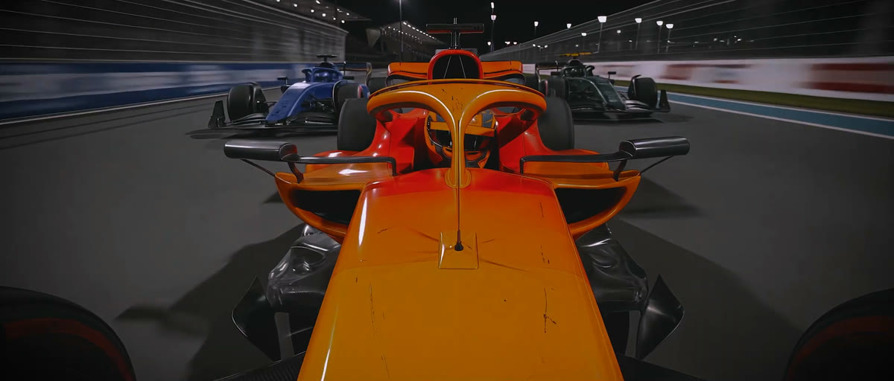
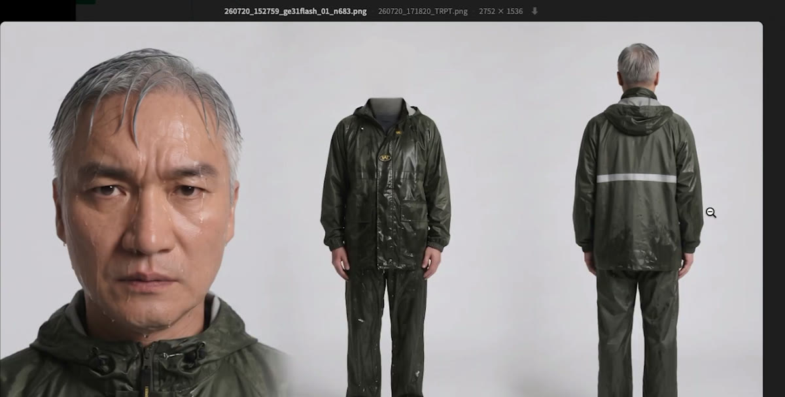

01
SF
02
Action

03
Racing
2026 · Made with AI
SAW — Demo Film
The First
Demo
One Pipeline
· Every Genre
Generated & Directed by SAW · RT
3:24
Behind the Scenes
Identity Data

Costume Turnaround
Flowmark Pipeline
SAW — Making Film
데이터가
컷
이 되기까지
Behind the Pipeline
Easteregg Studio
· Chroma Stage 1 · 15 × 10 M Horizont
 01SF
01SF 02Action01SF02Action
02Action01SF02Action